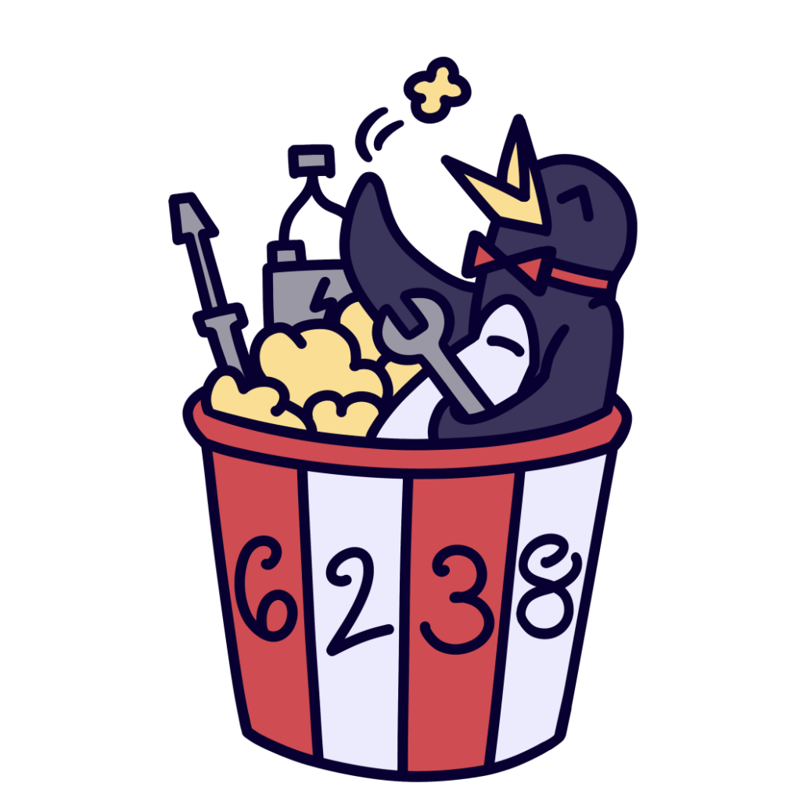

 I am a member of Team 6238, the Popcorn Penguins, in a robotics competition known as FRC. FRC stands for FIRST Robotics Challenge, and is a competition meant for highschoolers. In this community team, I was able to learn how to build robots from scratch. This included brainstorming mechanisms, creating prototypes with the machines available, and being able to program the robot. This season, for the Reefscape challenge, our team made an algae bot. Instead of trying to do everything there was, we wanted to focus on one thing and make it great. This paid off when we made it to the international competition in Houston. There, we got to meet teams from all over the world, saw very interesting robots, and competed against other teams.